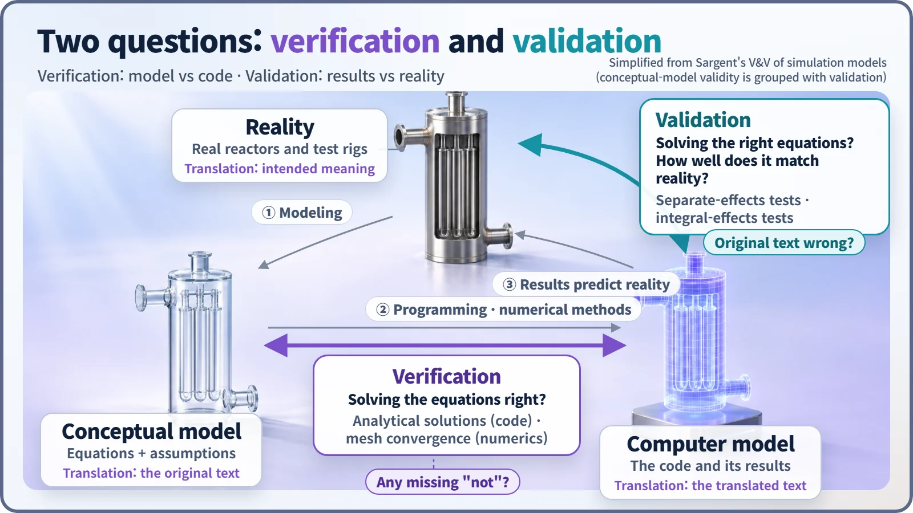
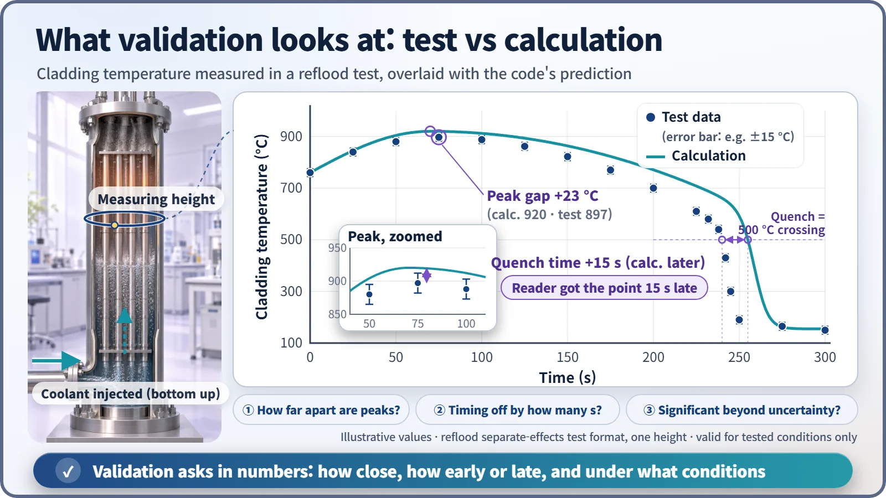

Modeling, Simulation & Computation · 263
Perfect Grammar, Wrong Meaning — The Difference Between Verification and Validation (V&V)
A translation can be grammatically perfect and still wrong; nuclear codes are checked both against their equations and against reality.
Verification asks whether a code solves its equations right; validation asks whether it solves the right equations. Verification compares the code with mathematics (analytical solutions, mesh convergence) and needs no experiments; validation compares results with experiments such as separate-effects and integral-effects tests, within the conditions that were actually tested. [1]
Two translation mishaps
On a trip abroad, your translation app lets you down twice. A menu says "Do not eat raw," and the app renders it as "Eat raw": it dropped the "not." Then a hotel notice says "Hot water is on the left," and the app translates it flawlessly. But in that hotel, the hot tap is on the right; the person who wrote the notice got it mixed up.
Both end in wrong information, but the fix is in a different place: the first time you fix the translator, the second time the original text. Nuclear plant calculations check these separately, through V&V: verification and validation.
Check the translation against the original, then test it on readers
Real phenomena are first written down as equations and assumptions, a conceptual model; those equations are then turned into a program, the computer model or calculation code. If reality is what the author meant, the conceptual model is the original text and the code is the translation. That gives two places where things can go wrong:
- Verification: is the code solving the equations correctly? Comparing the translation with the original, line by line: "solving the equations right."
- Validation: do the equations represent reality well in the first place? Testing the translation on real readers: "solving the right equations."

This three-corner picture follows R. G. Sargent's framework, widely used in simulation. A caution about everyday language: people often say a code was "verified by experiment," but in V&V terms, comparing with experiments is validation. [2]
Testing the translator with problems that have an answer key
Verification needs no experiments; it is a question between mathematics and the computer.
Comparison with analytical solutions. Give the code simple problems whose exact answers are known, such as a cylindrical core of uniformly mixed material, or heat conduction along a single rod, and see how far its answer strays.
Mesh convergence checking. A code calculates on small cells that divide space and time. Make the cells smaller and check that the answer settles toward a single value at the theoretical rate: for a common second-order method, halving the cell size should cut the error to about a quarter. If it doesn't, a "not" has gone missing somewhere. [3]
Reader reactions are checked at the test facility
Validation is impossible without experimental data. Separate-effects tests isolate one phenomenon and measure it precisely, for example how the cladding (the metal tube around the fuel) of electrically heated simulated fuel rods cools as water refills the bundle from below. Integral-effects tests simulate a whole accident in a scaled-down plant system to see how many phenomena interact; LOFT in the United States and LSTF in Japan are well-known facilities.

The question is not whether the curves look roughly alike. It is how far apart the peak temperatures are, how many seconds off the quench (the sudden temperature plunge) is, and whether the difference still matters after allowing for uncertainty in measurements, inputs and calculation (the error bars show the measurement part). What counts as acceptable depends on what the calculation will be used for. And the evidence centers on the pressures, flow rates and geometries actually tested; going beyond them needs more evidence, just as a translation must be tested again on a different readership.
The trap of doing only one
Matching the experiment isn't enough. Two mistakes pulling in opposite directions can cancel, so the code matches today's test and misses when conditions change. That is why verification usually comes first: only then can a gap with experiment be attributed to the model's limits.
A bug-free code isn't enough either. If its equations misrepresent reality, it gives a precisely wrong answer, like the app that perfectly translated the wrong hotel notice.
Tuning is not validating. Adjusting coefficients to match an experiment and then using the same data to declare a good match is grading a test solved with the answers in view. Validation needs independent data. Benchmarks, in which many codes solve the same reference problem, also help build trust.
Two questions written into regulation
The US Nuclear Regulatory Commission's Regulatory Guide 1.203 (2005) sets out EMDAP, a procedure for developing and assessing accident-analysis models: define the purpose and the important phenomena, build an assessment base from separate-effects and integral-effects test data, and judge whether the model is adequate for that use. [4]
Key takeaways
Many numbers behind a plant's safety margins come from such calculations, and they earn trust by passing two checks: the translator compared with the original (verification) and the translation tested on readers (validation). When you hear "a verified code," ask: were the equations solved right, or were the right equations solved?